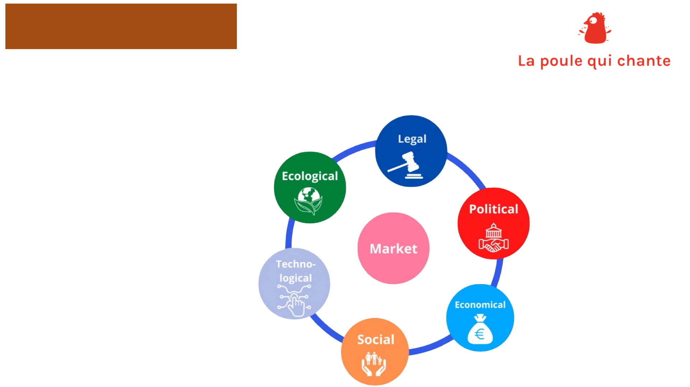
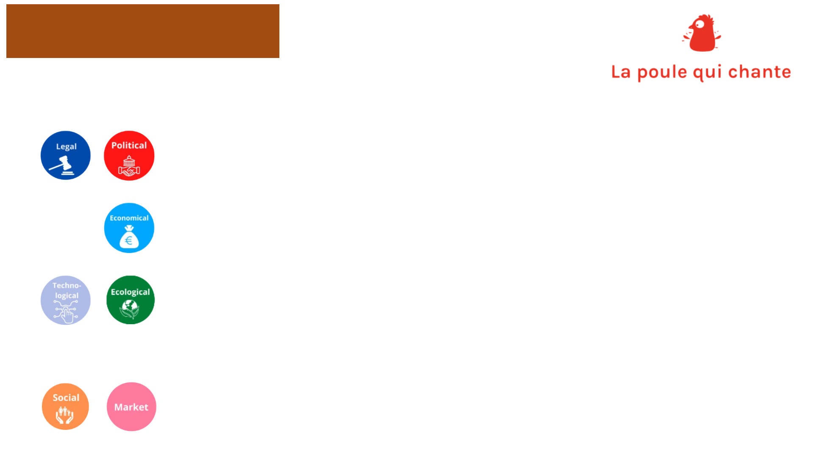
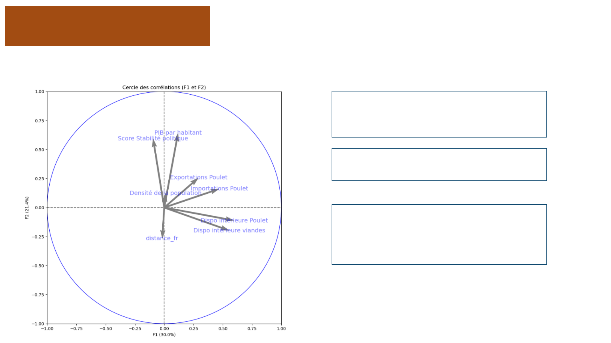
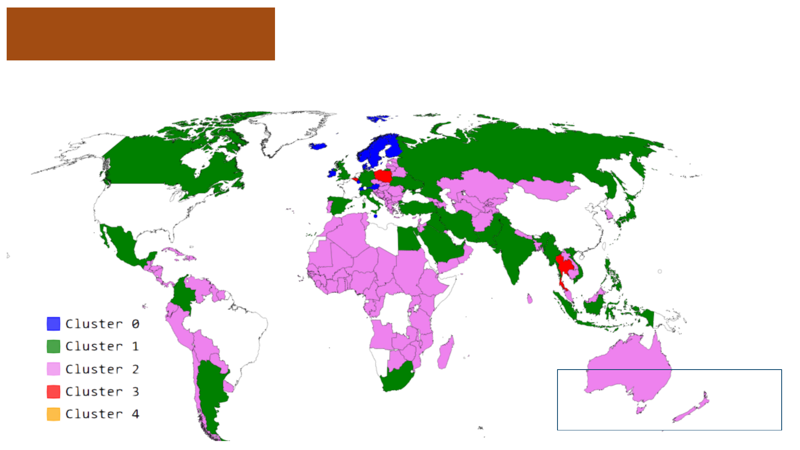
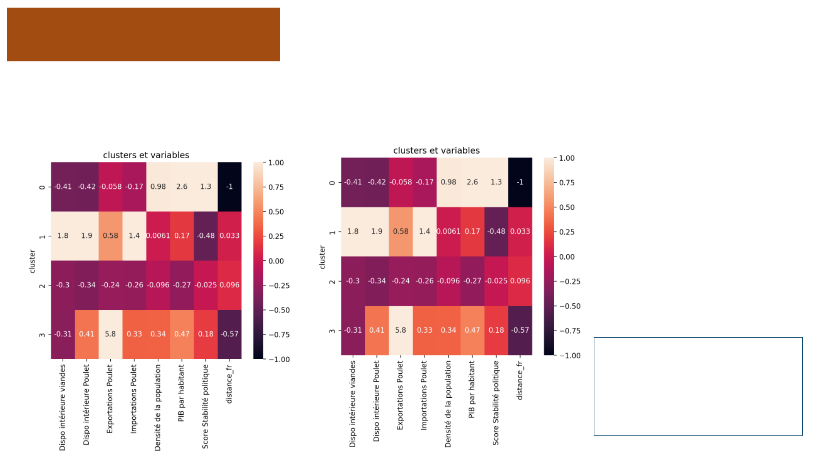
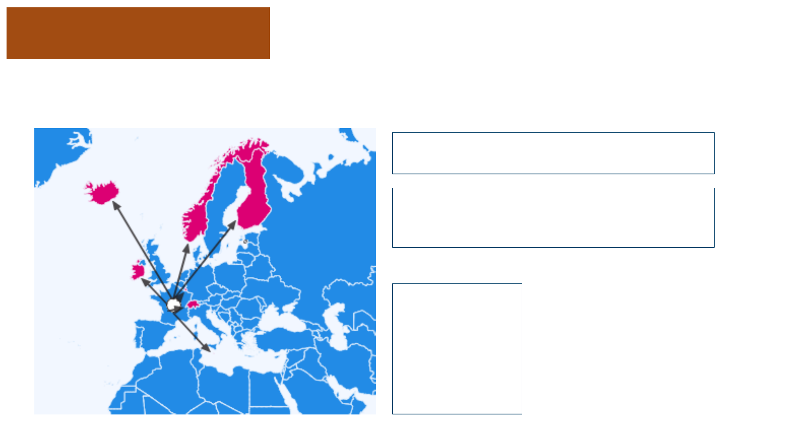
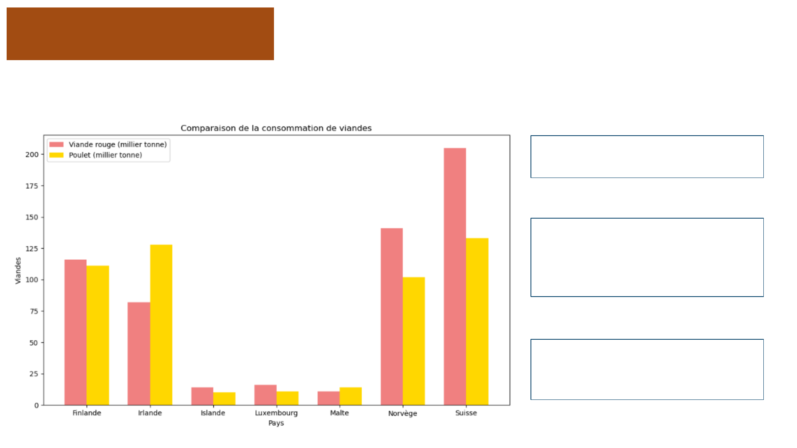

ÉTUDE DE MARCHÉ POUR UNE
L’IMPLENTATION À
L’INTERNATIONAL
ANALYSE DES PAYS CIBLÉS
RÉALISÉ SOUS PYTHON
TABLE DES MATIÈRES
PARTIE 1:
Sélection des informations utiles
- Le contexte
Rappel du besoin de l’entreprise
- La démarche suivi
Présentation de l’analyse Pestel
Choix des informations nécessaires
PARTIE 2:
Analyse du marché mondial
- Cercle de corrélations
Permet de vérifier si nos informations sont bien
sélectionnées.
- Méthodes de partitionnement des données
Méthode CAH / Méthode Kmeans
- Résultats de l’analyse
Comparaison des méthodes
- Recommandation des pays ciblés
Visualisation des éléments
Conclusion
PARTIE 1
- La démarche suivi
Présentation de l’analyse Pestel
Choix des informations nécessaires
Sélection des informations utiles
- Le contexte de la demande
Rappel du besoin de l’entreprise
Contexte et rappel du besoin
PARTIE 1
Lancement d’une mission de data international.
La poule qui chante est une entreprise française d’agroalimentaire qui souhaite se développer à
l'international.
L'international, est un champ est bien large : aucun pays particulier ni aucun continent n'est choisi.
Tous les pays sont envisageables.
Nous devons établir plusieurs informations qui seront utiles pour découvrir nos pays ciblés.

Analyse Pestel
PARTIE 1
La méthode d'analyse PESTEL (Politique, Économique, Socioculturel, Technologique,
Écologique, Légal).
C’est un outil de diagnostic
stratégique qui permet de
comprendre l'influence extérieure qui
peut impacter l’activité.

Choix des informations à traiter
PARTIE 1
Distance entre la France et les pays
Plus la distance entre les pays est courte et plus elle réduit l’empreinte carbone.
Plus elle réduit le cout de transport.
Une bonne gestion logistique est plus simple si les pays sont proches.
Score de stabilité politique
Un pays avec une bonne stabilité politique, ne créera pas de conflits ou d’inflation.
PIB par habitant
Un PIB par habitant élevé est signe de richesse d'un pays.
Disponibilité des produits
Apporter à un pays une diversité de nourriture
PARTIE 2
Analyse du marché mondial
- Cercle de corrélations
Permet de vérifier si nos informations sont bien
selectionnées.
- Méthodes de partitionnement des données
Méthode CAH / Méthode Kmeans
- Résultats de l’analyse
Comparaison des méthodes
- Recommandation des pays ciblés
Visualisation des éléments

PARTIE 2
Cercle de corrélations
C’est un outil graphique utilisé en
statistiques multivariées pour visualiser
les relations entre plusieurs variables.
Nos variables ou (informations) sont
biens choisis car elles ont toutes une
corrélation.
Exemple:
Un pays qui aura un fort score de
stabilité politique aura également un PIB
par habitant conséquent.
PARTIE 2
Méthodes de partitionnement des données ou clustering
CAH
(Classification Ascendante hiérarchique)
Afin d’être certain de mes prédictions, j’ai utilisé deux méthodes similaire que j’ai comparé.
Méthode CAH et la méthode Kmeans
Ils permettent d'analyser un jeu de données afin de regrouper
les données « similaires » en groupes (ou appelé clusters).
Ils rassemblent selon un critère de ressemblance défini au préalable
qui s'exprimera sous la forme d'une matrice de distances ,
exprimant la distance existant entre chaque individu pris deux à
deux.
Deux observations identiques auront une distance nulle.

PARTIE 2
Visualisation des clusters à l’échelle mondial
Avec cette méthode nous
avons déjà une idée de la
zone géographique à cibler.

PARTIE 2
Comparaison des méthodes
En prenant en compte
l’importance de la
stabilité politique et le PIB
Le choix se fera sur le
cluster 0.
CHA
Kmeans
Ayant un résultat similaire nous pouvons en déduire que l’analyse est bonne.

PARTIE 2
Recommandation des pays ciblés
Top 7 des pays recommandés pour une implantation de marché
Finlande
Irlande
Islande
Luxembourg
Malte
Norvège
Suisse
Afin d’affiner notre analyse deux dernières
condition ont été mise en places.
Nous ne garderons que les pays avec une
stabilité forte et une disponibilité de poulet
dans le pays de type moyenne ou faible.

PARTIE 2
Analyse approfondi sur le top 7
Ces graphiques nous
présentes des informations
très intéressantes.
Nous pouvons facilement
comparer les pays avec les
meilleurs PIB ou encore les
plus proches
Mais également
comprendre les problèmes
de logistique ou de
concurrence.

PARTIE 2
Analyse des pays consommateurs de viandes
Nous pouvons constater des
différences.
Certains pays on une
tendance à une
consommation sur la viande
rouge.
Cela pourrait permettre à
l’entreprise de palier à ce
manque de nourriture.
CONCLUSION
Récapitulatif des facteurs principaux prix en compte dans cette analyse de marché
La distance / la situation politique / PIB par Habitant / la consommation de viandes
Les pays qui offrent les meilleurs opportunités :
- Le Luxembourg présente tous les facteurs de manière positif.
- Malte présente également des grands facteurs positif, mais cela reste une île.
- l’Islande présente de nombreuses possibilités, mais c’est une île qui n’est pas proche.
Les pays que je ne conseil pas :
- La Suisse malgré ça proximité et son très bon PIB à un marché très concurrentiel.
- La Finlande se trouve loin de la France, et a un marché très concurrentiel.
- L’Irlande à un marché très concurrentiel.
- Norvège à un marché concurrentiel, mais avec de bons résultat pourrait être
Une alternative.
QUESTIONS
s
RÉPONSES